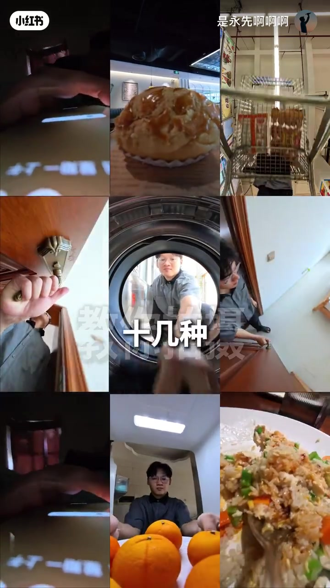
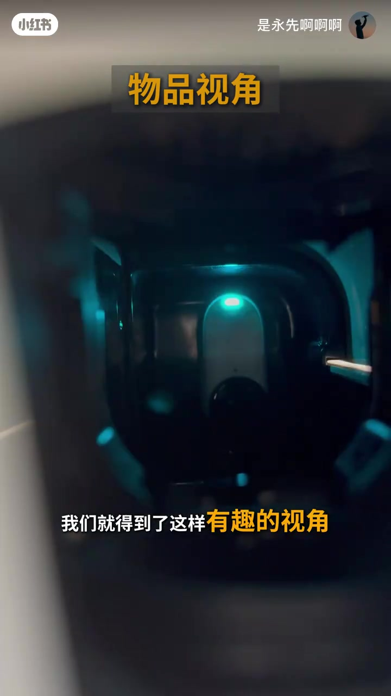
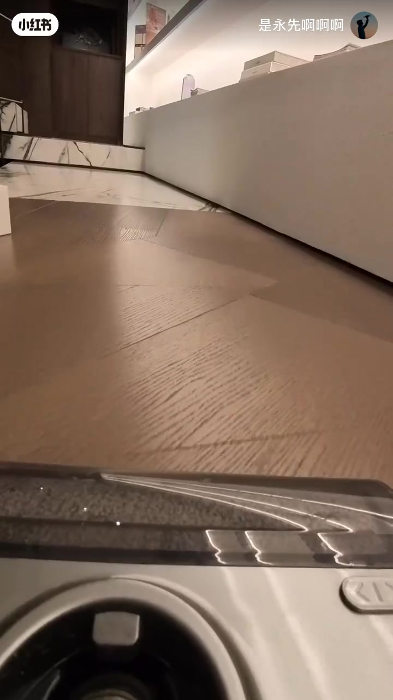
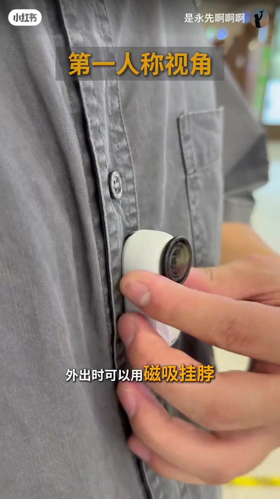
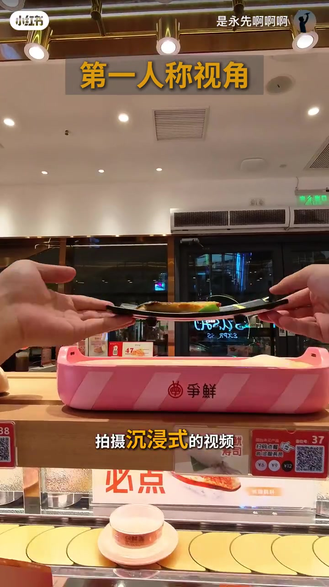
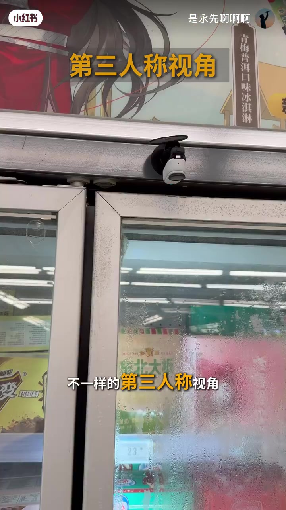
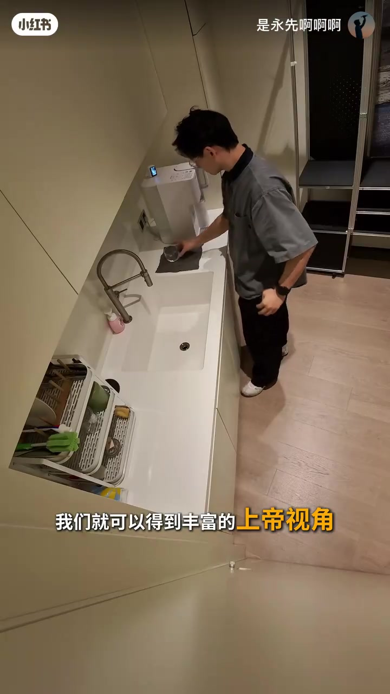

开场：新手能拍出哪些有趣视角
画面里，戴眼镜的作者站在餐桌前，手里捏着一台拇指大小的白色相机，桌上放着一只橙子。大字幕直接喊「新手小白」，语气像在替观众提问：普通人到底还能拍出什么不一样的镜头？
他立刻给出答案——今天就用能拍 4K 的小相机，教你拍出「十几种」创意镜头。随后切到九宫格样片：洗衣机圆门里的人脸、门把手仰俯对比、冰箱里的自拍、手机屏幕特写、寿司与炒饭近景，像是先把结果甩到桌上。

说明：Whisper 把「机身小小」识成「起机小小」，把「vlog」识成「伪漏」，把「监看」识成「肩看」，把收尾「解锁」近似识成「接受」；下文叙事以可见字幕与画面为准，文末转录区仍完整保留全部原始分段。笔记文案点名设备为 Insta360 GO3S，属作者补充信息。
口播开场 [00:00–00:08]：「新手小白能拍摄哪些有趣的视角呢」「今天就用拇指大小能拍4K的相机」「教你拍摄十几种创意的镜头」。
物品视角：把相机绑到日常物件上
第一种做法很直接：用转向支架或夹子，把相机和生活里常用的物品固定在一起。黄色标签「物品视角」叠在画面上，镜头落到一台被塞进暗处的白色胶囊相机，绿指示灯亮着——观众先看到的是「相机被藏进了某个东西里」。

下一秒，成片切到扫地机器人视角：机身顶面占据画面下半，前方是人字拼木地板与白色柜脚，像跟着清洁机器人在家里巡游。物品不再只是道具，而是叙事主体——「从物件眼里看家」。

可见字幕/口播 [00:08–00:15]：「利用转向支架或者夹子」「将生活中常用的物品和相机固定在一起」「我们就得到这样有趣的视角」。
第一人称：磁吸挂脖解放双手
外出段落开始，橙色标题打出「第一人称视角」。镜头对准胸口的灰衬衫，手把白色小相机往胸前一贴——字幕说外出可用「磁吸挂脖」。作者强调机身小、不怕尴尬，双手腾出来就能拍沉浸式画面。

成片立刻落到回转寿司店：双手端起黑盘鳗鱼寿司，粉色「争鲜」传送带横在画面中间，下方还能看见「必点」价签与扫码点餐牌。观众几乎站在作者肩膀上一起点餐——这就是他要的沉浸感。

口播 [00:26–00:34]：「外出时可以用磁吸挂脖拍摄第一人称视角」「起机小小不怕尴尬」（可见语义≈机身小小）「解放双手拍摄沉浸式的视频」。
第三人称：磁吸机位旁观自己
相机自带磁吸，被吸在冰柜门框上方朝下看。橙色标题「第三人称视角」出现时，画面里只有机位本身——作者还没入画，观众先理解「相机可以离开手，替你旁观」。

随后是超市走道成片：作者推着购物车从货架间走过，零食挂架与酱料瓶占据前景。机位不在手里，而在环境里——画面因此更像「有人在拍我的一天」，而不是自拍杆怼脸。
口播里「丰富你的伪漏画面」按语境应作「丰富你的 vlog 画面」；此处保留转录原文于文末，叙事按可见语义书写。
口播 [00:34–00:42]：「相机本身自带磁吸」「可以帮助你发掘很多不一样的第三人称视角」「从而丰富你的伪漏画面」「我们就能得到这样的视频」。
上帝视角：墙面、冰箱、门与拓展舱监看
第四种视角把机位抬高。字幕提示可吸在墙壁、冰箱、门上；高视角还可借助拓展舱「轻松监看画面」。画面里，小相机夹在木纹冰箱门上沿，黄字标「俯拍视角」「冰箱」——布置本身就是教学。
成片切到厨房高机位：作者站在水槽与收纳架之间低头操作，整间厨房被一览无余。口播收束：「我们就可以得到丰富的上帝视角。」

口播 [00:52–01:01]：「拍摄角度上还可以选择墙壁」「冰箱 门上 高视角可以利用拓展舱」「轻松肩看画面」（可见语义≈监看）「我们就可以得到丰富的上帝视角」。
多视角拼一天，然后喊你一起解锁
口播说「多视角展示我一天都干了什么」之后，画面进入蒙太奇：13:30「开始进食」、15:00「逛超市」等时间戳叠在对应镜头上——同一套四种视角，被用来串起吃饭、逛街、回家的日常。
收尾很短：作者说「以上就是我的本期内容」，邀请观众「一起来接受更多有趣的视角」（可见语义更接近「解锁/探索」）。整支视频从提问到四种手法再到一日拼盘，节奏像产品演示，但每一步都落在可复制的固定方式上。
这一趟看完留下什么
四种视角不是滤镜预设，而是四种「相机相对身体/环境」的放置策略：绑物品、挂胸前、吸环境、抬高监看。设备再小，位置对了，vlog 就从口播变成可逛的一天。